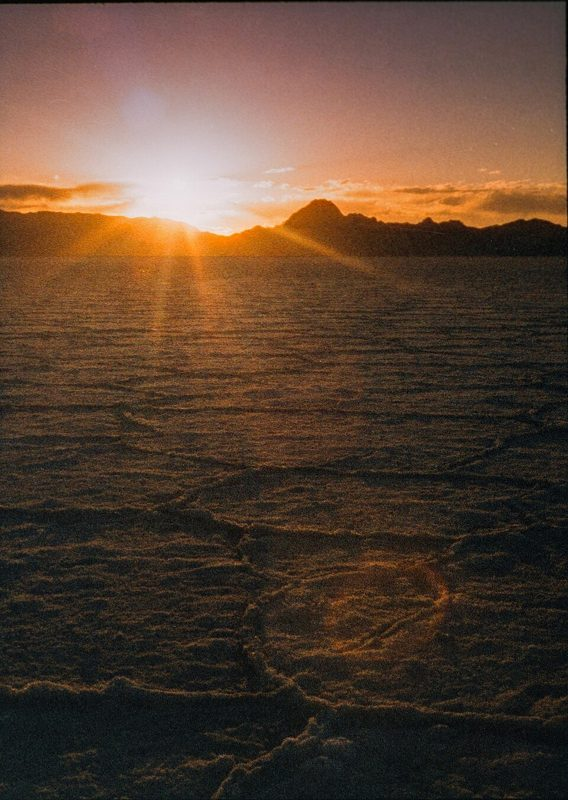

36 EXP. / 필름 / Harman Phoenix 200
Harman Phoenix 200
흑백 필름 회사 Harman(일포드)이 만든 실험적인 컬러 필름. 강한 대비와 빛 번짐이 개성입니다.

한눈에 보기
- 감도
- ISO 200
- 종류
- 컬러 네거티브 · C-41 현상
- 판형
- 135 · 120
- 이럴 때
- 맑은 날 야외, 실험적인 색을 원할 때
- 가격
- $13.99
특징
- 대비가 강하고 색이 독특하게 틀어짐
- 밝은 빛 주위로 헐레이션이 두드러짐
- 입자가 보이는 편
찍을 때 팁
노출을 넉넉히(한 스톱 밝게) 주는 편이 색이 안정적입니다. 결과가 매번 다를 수 있다는 걸 즐기세요.
이 필름에 대해
"무난한 색"이 아니라 "우연한 색"을 원할 때 고르는 필름입니다. 같은 롤 안에서도 빛에 따라 결과가 크게 달라집니다. 이후 개선판인 Phoenix II도 나왔습니다. 예시 사진은 Olympus Pen FT로 찍은 Phoenix 200입니다.
현상
컬러 네거티브 현상. 국내 대부분의 현상소에서 바로 맡길 수 있고, 35mm 한 롤 현상+기본 스캔은 대략 5천~8천 원, 고해상도 스캔은 1만 원 안팎입니다. 현상소 목록과 가격